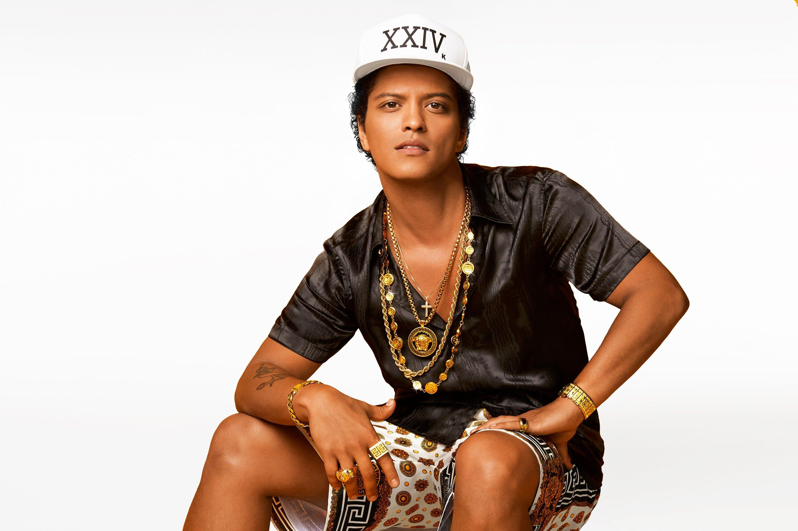

Three artists that inspire me is all musical artists: Bruno Mars, Brandon Lake, and Zach Bryan
I find Bruno Mars inspiring as he is also a Filipino artist and makes songs that relate to my personal life. His voice is rare and you don't here voices like his often. Bruno Mars
Brandon Lake is another artist that inspires me because he is a Christian singer, songwriter. A lot of his music speaks to me to follow my faith. Brandon Lake
Zach Bryan is the last artist that inspires me as his music is country but more story telling. Most of his music is relatable and gets me through tough times. Zach Bryan